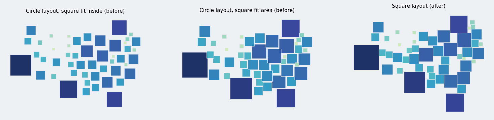
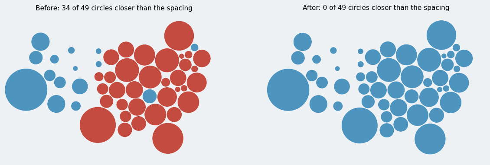

CentroidLayout(shape="square") separates axis-aligned squares of the circles' area, so squares sit flush with no gaps and no overlaps; the default stays circles. A final pass after the attraction cycles now also makes the circle layout keep its spacing.
Smallest gap between two circles as a fraction of the requested gap (spacing times the mean radius); at spacing 0 as a fraction of the mean radius (negative is overlap).
| data | spacing | before | after | mean displacement before / after |
|---|---|---|---|---|
| census snapshot | 0 | -0.062 | 0.000 | 156.0 / 160.6 km |
| census snapshot | 0.05 | -0.48 | 0.998 | 166.7 / 173.3 km |
| census snapshot | 0.2 | 0.49 | 1.000 | 210.7 / 220.9 km |
| world (177 countries) | 0 | -0.119 | 0.000 | 320.0 / 335.1 km |
| world | 0.05 | -1.98 | 0.998 | 339.4 / 358.7 km |
| world | 0.2 | -0.50 | 1.000 | 408.3 / 450.2 km |
The cleanup passes inside the attraction cycles are capped at 20, so the overlaps from the last attraction step could remain. The final pass (full local step, up to 500 passes, stops at the tolerance) removes them; the run time is unchanged (0.5 s for the census snapshot, 3 s for the world). The symbols move 3 to 10 % farther from their centroids, more at larger spacing.
| layout and symbols | overlapping pairs | total symbol area / circle area | mean displacement |
|---|---|---|---|
| circle layout, circles (before the final pass for circles) | 7 | 1.00 | 156 km |
circle layout, squares, fit inside | 0 | 0.64 | 156 km |
circle layout, squares, fit area | 28 | 1.00 | 156 km |
| square layout, squares | 0 | 1.01 | 230 km |
| square layout, squares, spacing 0.05 | 0 | 1.01 | 246 km |
Overlapping pairs have an overlap area above 0.1 % of the mean symbol area. The area ratio of 1.01 is the polygon approximation of the circle (a 64-gon has 0.5 % less area than the circle). The 7 overlapping pairs of the circle layout at spacing=0 are the state before the final pass for circles; after it none remain.
| option | CentroidLayoutOptions.shape, "circle" (default, unchanged) or "square" |
| collision | the pair distance is the larger axis offset (Chebyshev) and pairs separate along that axis, the direction of the smaller penetration; the global expansion factor uses the same distance |
| size | the square half-side is sqrt(pi)/2 times the circle radius, so the area stays proportional to the value; LayoutResult.sizes holds the half-sides |
| final pass | after the attraction cycles, up to 500 local passes with a full step (stops at the tolerance): 0.28 of the mean size overlap remained after 20 passes, none after this pass; 0.6 s for 49 regions |
| circles | the final pass runs for both shapes, so the circle layout keeps its spacing too (result-changing, figures above) |
| docs | gallery example plot_symbol_square_layout.py, a line in the layout table of the pipeline explanation |
The packing and flow-density layouts (their force simulators assume circles), rectangles with an aspect ratio, and a preset function. The symbols sit farther from the geometry centroids than circles (230 km against 156 km): equal-area squares need more room in the dense east, and the final pass allows no overlap.
Suite 1415 passed locally, mypy and ruff clean; the new tests cover flush squares, coincident squares, the canonical symbol, no overlap with and without groups, area proportional to the value, the unchanged circle path, and the requested spacing for circles and squares. The full suite and the docs build run in CI.

Left and middle: squares drawn on the circle layout (the fit modes inside and area); right: the square layout.

Circle layout, spacing 0.05, before and after the final pass; circles closer than 90 % of the spacing to a neighbor are red.